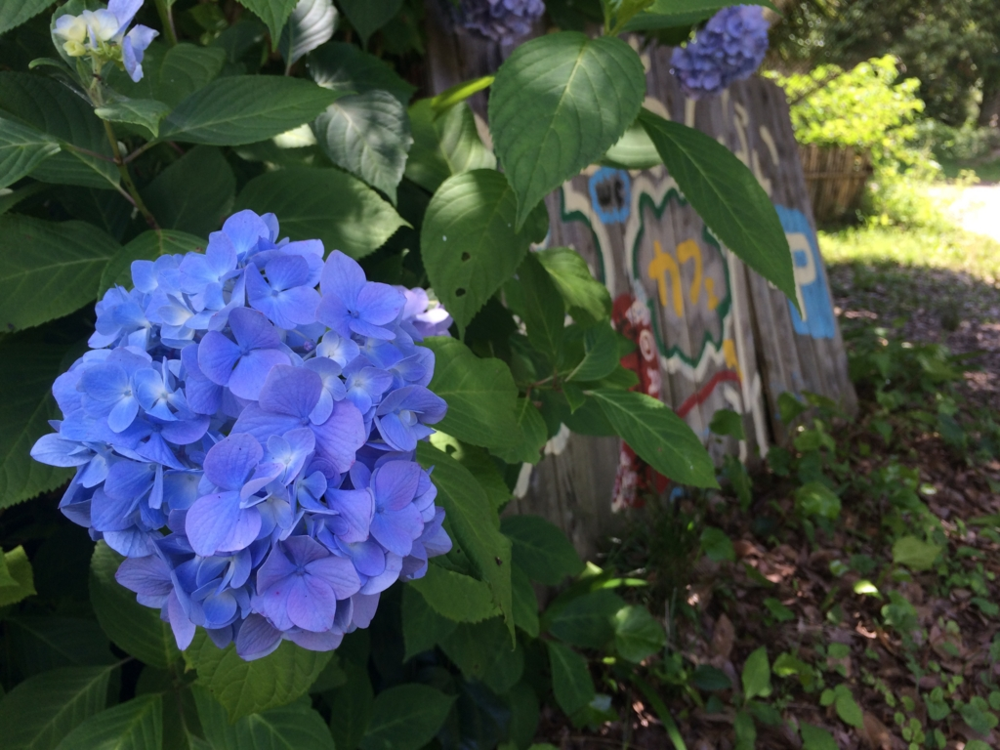
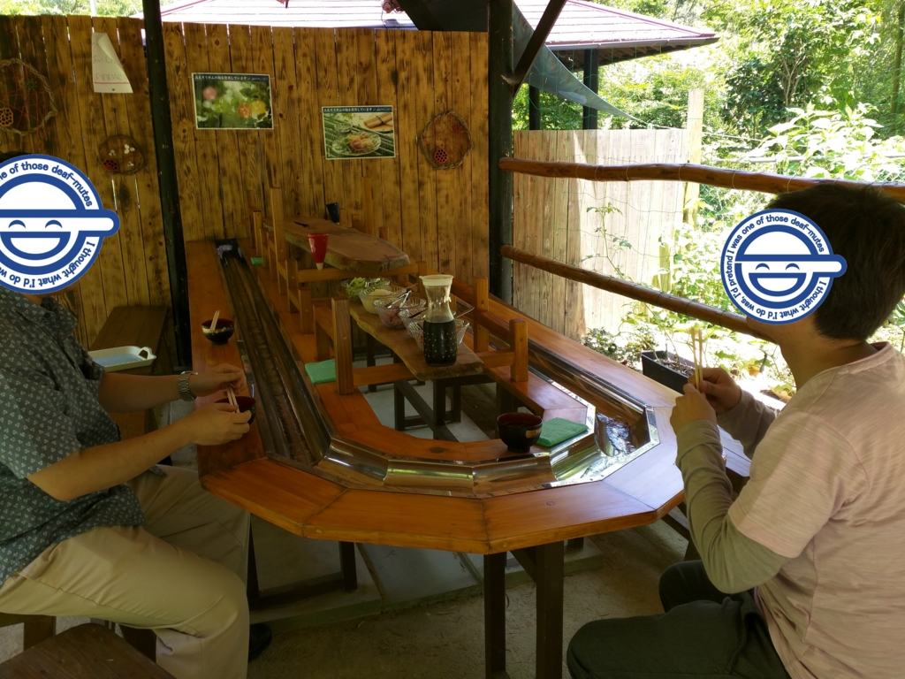
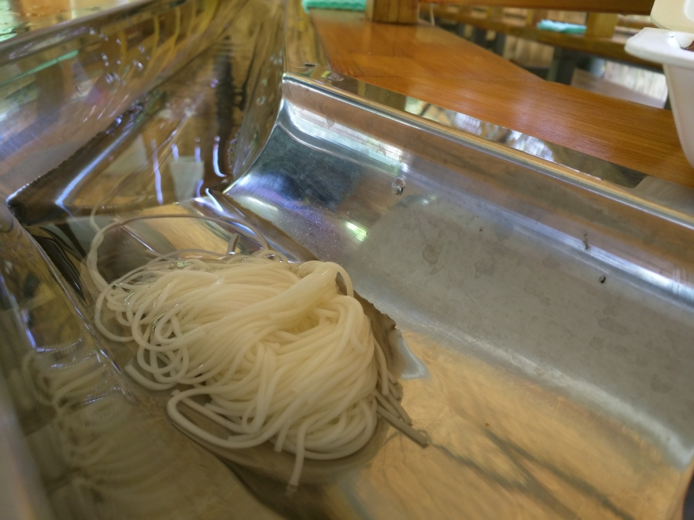
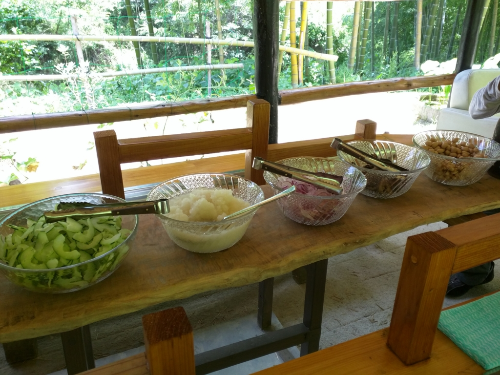
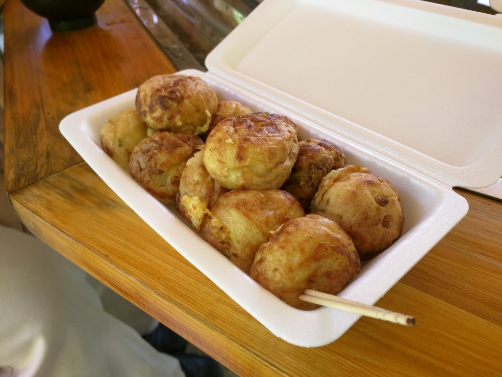
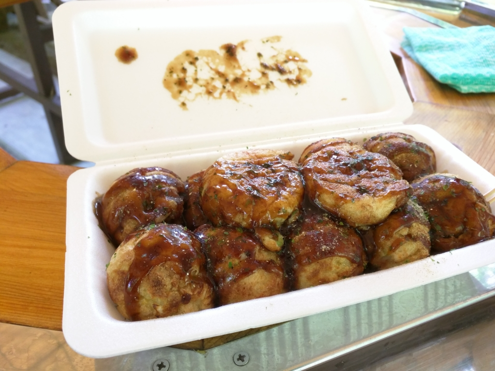

そろそろおっさん3人で流しそうめん食いに行った話でもするか。
公開日：
とある月曜日の真昼間から、おっさん3人で流しそうめんを食べに行った。もしかしたらわし以外の二人はおっさんじゃないかもしれないけど、わしには半径5m以内に立ち入った男性をおっさんにするというユニークスキルがあるので、とりあえずおっさんということにしておく。
確か11時ぐらいに山越えのローソンに集合し、@ramusara と一緒に @cordis80 のかっちょいいクルマに揺られて、五明という方へ向かう。こっちに来たのは初めてだけど、クルマでそれほど走ったわけではないのにすっかり緑いっぱいといった感じの地域で、この辺りなら隠居暮らしにちょうどいいなぁ、などと思った。

無邪気庵というこの店は、ちょっと隠れ家っぽい感じでおもしろい。カフェと書いてあるので、普段はお茶でも出してくれるのだろう。

お値段は大人600円。リーズナブルだけど、あとで“つけたこ焼き”を売りつけられたので（いや、別に断ればよかったんだけど、焼き過ぎたというので、せっかくなので買った）、一人1,000円弱ぐらいだと思う。

店内の様子。入るまでは割った竹を組んだだけのものを想像していたので、割と本格的な造りでビックリした。下の方には川が流れていて、風がひんやりとした冷気を運んでくる。裏には竹が生い茂り、風が吹くとシャラシャラと音を立てる。なかなかのロケーションではないか。

このステンレス（？）の樋を、五色そうめんたちがツイーっと流れてくる。
このそうめんたちには実に個性が豊かだ。水をせき止めながらちんたらやってくるヤツもいれば、箸から逃げるように駆け抜けていくヤツもいる。実は流しそうめんをするのは生まれて初めてだったりするのだけど、これはなかなか楽しいものだと思う。
また、流しそうめんは人間の性格をも隈ってくれる。まず、場所取り。上流から @daruyanagi、@ramusara、@cordis80 という順番で座っていたのだけど、たぶんこの順番に積極的というか、欲張りというか、でしゃばりなのだろう。@daruyanagi は自分のペースを守る男で、そうめんが目の前を流れても取りたい時にとり、そうでないときは手を出さない。一方、殿の @cordis80 は最後尾の義務感にかられ、あとに残すまいとくるヤツくるヤツをすべて食べている。無理したら死ぬぞ。

そうめんばかり食っていると飽きるが、薬味がたくさんあったので、それを試しながら食う。それでも15分か20分ほどすると、そうめんにも飽き、箸がのびなくなった。

そこへ、たこ焼きが登場。

そうめんの出汁に漬けて食べるみたいだけど、正直、自分はソースで食べる方が好きかな？ でも、たまにはこういうのも楽しいと思う。

そして、ソースたこ焼きの押し売りワンセット（しつこいけど、別に断ってもよかったんだけど、焼き過ぎたとのことなので、せっかくなので買った）。たぶんほんとは10個入りが標準だと思うのだけど、おっさん三人でたこ焼き三国志にハッテンしないようにとの配慮か、2個オマケしてくれた。全部平らげると、さすがに腹がいっぱいで死にそうになった。
結構楽しかったのでまた行きたいけれど、おっさん3人より小さい子のいる家族連れの方が楽しめると思いました。